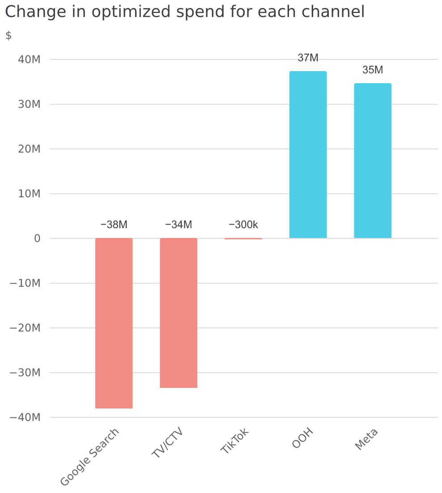

6.2 MMMの構築と最適化
日本語版について
このページは英語版 Marketing Science in Python のAI翻訳です。英語版を正本とし、差異がある場合は英語版を優先してください。コード、Notebook、画像内の文字は英語のままです。 英語版を読む
マーケティング・ミックス・モデリングとは何か？
マーケティング・ミックス・モデリング（MMM）とは、集計された時系列データ（通常は週次の売上とチャネル別メディア支出）を使って、各マーケティングチャネルが事業成果にどれだけ寄与したかを推定する統計的アプローチです。ユーザーレベルのアトリビューションと違い、MMMは集計データを扱い、個人の追跡を必要としません。そのため、Cookieの消失、App Tracking Transparency、ウォールドガーデンの制約に強いという特徴があります。
MMMには3つの目的があります。
| 目的 | ビジネス上の問いの例 | |
|---|---|---|
| 1 | 効率を測定する | 昨年のTVへの支出はどれだけ効率的だったか？ |
| 2 | シミュレーションする | 来年TVへの支出を増やす、または減らすと、売上はどう変わるか？ |
| 3 | メディア予算を最適化する | 売上を最大化するには、メディア予算をどう配分すべきか？ |
MMMへの関心が再び高まっているのは、ユーザーレベルの追跡の信頼性が下がったためです。集計モデルはいまや、チャネル横断のメディア効果を測る最も実用的な方法になっています。
MMMの方程式
最も単純なMMMは、祝日、販促、その他の非メディア要因を統制し、週次売上をメディア支出で回帰するモデルです。

ここで、\(y_t\)は時点\(t\)の売上、\(x_{c,t}\)はチャネル\(c\)への支出、\(z_{k,t}\)は統制変数、\(\varepsilon_t\)はノイズです。
この単純な回帰だけでは不十分な理由が2つあります。第一に、メディア効果は即時に終わりません。今週のTV広告が翌週以降の購買にも影響しえます（キャリーオーバー）。第二に、メディア効果は線形ではありません。1週間に追加される100番目のGRP（gross rating point、TV視聴者への到達量を表す標準指標）は、最初のGRPほどの効果を生みません（収穫逓減）。
より現実的なモデルでは、線形結合の前にアドストック（キャリーオーバー）と飽和（収穫逓減）の変換を適用します。

飽和（収穫逓減）
どのメディアチャネルも、いずれは飽和します。 1つのチャネルに多く支出するほど、追加の1ドルが生む収益は小さくなります。最初の100万ドルのTV支出は大きな増分売上を生みますが、1,000万ドル目の効果ははるかに小さくなります。図 3 は、そこから生じる3つの領域を示しています。1ドルがまだ大きく効く過少投資領域、最適範囲、そして追加支出の大部分が無駄になる飽和領域です。

これをモデル化する最も一般的な方法がHill関数です。
\[ \text{Hill}(x) = \frac{x^S}{x^S + K^S} \]
ここで、\(K\)（半飽和点、EC50とも呼ばれます）はチャネルが最大効果の50%に達する支出水準で、\(S\)（傾き）は曲線がどれほど急に曲がるかを制御します。
この曲率があるからこそ、予算再配分に価値が生まれます。図 4 では、チャネルXは飽和領域の奥深くにある一方、チャネルYにはまだ余地があります。Xの予算を削ると売上を$1M失いますが、その予算をYに追加すると$3Mを得ます。同じ総支出で正味$2Mの増加です。飽和したチャネルの平均ROASの方が高く見えても、そこから過少投資のチャネルへ予算を移すことで、総リターンを増やせる場合があります。平均ROASは、チャネルの増分売上合計を総支出で割った値です。限界ROASは、チャネルが現在位置する点での曲線の傾きで、次の1ドルが生むリターンを表します。

アドストック（キャリーオーバー効果）
広告は、放映が終わった瞬間に効かなくなるわけではありません。アドストックは、この遅延効果を捉えます。最も単純な形は幾何減衰です（Meridianも同じ重みを、その合計で割って使います）。
\[ \text{Adstock}_t = x_t + \lambda \cdot \text{Adstock}_{t-1} \]
ここで、\(\lambda \in [0, 1]\)は残存率です。\(\lambda\)が高いほどキャリーオーバーが長くなります。図 5 と 図 6 は、同じ3回の広告フライトを2つの残存率で示しています。TVのような上位ファネルのチャネルに典型的な高い残存率では、各フライトの効果が放映後も長く残り、重複するフライトが積み重なります。デジタルチャネルに典型的な低い残存率では、効果は数日で薄れます。


残存率は、効果が半分に低下するまでの期間数、すなわち半減期 \(\ln(0.5) / \ln(\lambda)\) として考える方がわかりやすいでしょう。週次粒度では、TVのような上位ファネルのチャネルは一般に数週間の半減期でモデル化される一方、有料検索のような下位ファネルのチャネルは約1週間以内に減衰します。付属デモでは、すべてのチャネルを12週間のウィンドウで幾何アドストックによりモデル化し、ファネル段階ごとに減衰の事前分布を設定します。TV/CTVとOOHは6週間（\(\lambda \approx 0.89\)）、MetaとTikTokは3週間（\(\lambda \approx 0.79\)）、Google Searchは1週間（\(\lambda = 0.5\)）です。これらは事実ではなく、データで更新される出発点の事前分布として扱ってください。公表されている指針には幅があり、適切な値はカテゴリーとデータ粒度に依存します。「週次」の残存率を日次データに適用すれば、まったく異なる半減期を意味することになります。
より柔軟な代替手法もあります。Weibullアドストックでは、減衰形状を非単調にできます。接触から数日後に効果がピークを迎えてから減衰させられるため、自然な処理遅延があるメールやダイレクトメールのようなチャネルをよりよく捉えられます。
データ要件
MMMには、目的変数、メディア支出、統制変数が必要で、いずれも週次です（表 2）。
| 変数の種類 | データ区分 | 変数 | 優先度 |
|---|---|---|---|
| 目的変数 | KPI | 売上 | 必須 |
| 説明変数 | メディア | チャネル別のメディア支出 | 必須 |
| 説明変数 | その他 | メディア以外のマーケティング指標（価格、販促、配荷） | 任意 |
| 説明変数 | その他 | 季節性、祝日、天候、マクロ経済 | 任意 |
推奨される粒度は次のとおりです。
- 時間：週次。日次データはノイズが多く、月次データでは観測数が少なすぎます。
- 履歴：少なくとも2〜3年（およそ104〜156週）。履歴が短いと、メディア効果を季節性から分離するのが難しくなります。
- 地域：全国またはブランドレベルが一般的です。国より細かな地域レベルのモデルはより強力になりえますが、より多くのデータと慎重なモデル化が必要です。
- チャネル：実際に支出が変動するチャネルだけを含めます。毎週同じ金額を使うチャネルでは、モデルはその効果を学習できません。
見落としやすい確認がもう1つあります。アドストックと飽和はチャネルの寄与をならすため、売上の週ごとの動きのうちメディアで説明できる分が、説明のつかないノイズより小さくなることがあります。そうなると、モデルはメディアとベースラインを分離できず、どの事前分布を使っても直せません。付属ノートブックは、適合の前にStep 2bでこれを確認します。
統制変数が重要である理由はもう1つあります。メディア支出と売上は、もともとトレンドと季節性を共有することが多くあります。同じ暦で動くだけで、互いに無関係な2系列の間に強い相関が生じることがあります。季節性とトレンドの統制変数が、その共有構造をメディア係数に混入させない役割を果たします。
以下で使うデモのデータセットはこの形をしています。週ごとに1行、売上、5チャネルそれぞれの支出、そして統制変数です。表 3 に最初の5週間を示します。
| 週 | 売上（$M） | TV/CTV（$k） | OOH（$k） | Google Search（$k） | Meta（$k） | TikTok（$k） | 季節性 | クリスマス |
|---|---|---|---|---|---|---|---|---|
| 2020-12-28 | 21.4 | 382 | 0 | 740 | 948 | 402 | -0.039 | 1 |
| 2021-01-04 | 37.3 | 836 | 0 | 768 | 1,778 | 882 | 0.069 | 0 |
| 2021-01-11 | 38.9 | 848 | 0 | 776 | 1,612 | 772 | 0.188 | 0 |
| 2021-01-18 | 41.5 | 784 | 0 | 776 | 1,619 | 851 | 0.305 | 0 |
| 2021-01-25 | 41.5 | 742 | 0 | 777 | 1,683 | 755 | 0.417 | 0 |
ベイズ的アプローチ
現代のMMMは主としてベイズ的です。実務上の理由が3つあります。
- 事前分布にドメイン知識を組み込める。 過去の実験からTVのROASがおよそ2.0だとチームが知っているなら、それを事前分布として組み込めます。モデルはデータを使ってこの見積もりを更新します。事前分布がなければ、多重共線性だけが理由で非現実的な推定値が生じることがあります。
- 点推定ではなく信用区間。 「TV ROAS = 2.3」ではなく、「TV ROAS：中央値2.3、90% CI [1.1, 3.8]」が得られます。
- 実験と自然に統合できる。 地域リフト実験を実施してチャネルの増分効果を推定したら、その証拠を情報量のある事前分布としてMMMへ渡せます。これにより事後分布が狭まり、識別性が改善します。このワークフローはSection 6.4で詳しく扱います。
これが、MeridianやPyMC-Marketingのようなツールが内部でベイズ推論を使う理由です。
ライブラリを選ぶ
本章の概念を実装するオープンソースライブラリはいくつかあります。2026年時点で最も広く使われている3つを示します。
| ライブラリ | 特徴 | GitHub |
|---|---|---|
| Meridian | GoogleによるPythonベースのベイズMMM。地域レベルのデータと実験によるキャリブレーションを強く支援する。現在は非推奨となったLightweightMMMの後継。 | google/meridian |
| PyMC-Marketing | Pythonベースのベイズ・マーケティングモデリング・ツールキット。MMM、CLV、顧客選択モデルを扱う。柔軟だが、より多くのモデリング判断が必要。 | pymc-labs/pymc-marketing |
| Robyn | MetaによるRベースのMMMライブラリ。Ridge回帰とProphetを使う。ベースラインモデルをすばやく構築するのに向く。 | facebookexperimental/Robyn |
3つともキャリーオーバーと飽和をモデル化し、予算配分を支援しますが、推定と不確実性の扱いは異なります。本章では、Python実装、実験によるキャリブレーション、適合結果や予算シナリオを確認しやすいレポートを理由にMeridianを使います。
Meridianによるウォークスルー
付属ノートブック： sec6.2_6.4_mmm_meridian.ipynbは、GoogleのMeridianライブラリを使った完全なMMMワークフローを実演します。
GitHubで見る
データの読み込みと準備
デモのデータセットには、5つのメディアチャネル（TV/CTV、OOH、Google Search、Meta、TikTok）と祝日・季節性の統制変数を含む157週間の売上データがあります。MeridianはDataFrameInputDataBuilderを使ってpandas DataFrameから入力データを構築します。スケーリングは内部で処理されるため、手動の正規化は不要です。重要なのは、Meridianがmedia_cols（インプレッションやクリックなどの接触量）に飽和を適用し、media_spend_colsをROASの費用基準として使う点です。
from meridian.data import data_frame_input_data_builder
# df: one row per week. The *_cols names are lists of its columns.
builder = data_frame_input_data_builder.DataFrameInputDataBuilder(
kpi_type="revenue", default_kpi_column="sales"
)
data = (
builder.with_kpi(df)
.with_media(
df,
media_channels=["TV/CTV", "OOH", "Google Search", "Meta", "TikTok"],
media_cols=media_cols, # exposure: saturation applies here
media_spend_cols=media_spend_cols, # dollars: the cost basis for ROAS
)
.with_controls(df, control_cols=control_cols)
.build()
)飽和とアドストックの事前分布
Meridianは半飽和点\(K\)を独自の単位で測ります。メディアは中央値でスケーリングされ、アドストックの重みは合計が1になるよう正規化されるため、常時出稿しているチャネルはこのスケール上で1付近に位置します。デモでは、飽和の事前分布を全チャネル共通の広いもの1つにし、緩やかに曲がる曲線を優先させています。チャネルごとの違いはアドストックの事前分布だけに持たせます。その中心はファネルの段階ごとに決めています。TV/CTVとOOHは半減期6週間、Searchは1週間、MetaとTikTokは3週間です。
仕様全体は、事前分布オブジェクト1つとModelSpec1つです。
import tensorflow_probability as tfp
from meridian import constants
from meridian.model import prior_distribution, spec
tfd = tfp.distributions
prior = prior_distribution.PriorDistribution(
# ROAS: one weak prior for every channel
roi_m=tfd.LogNormal(0.2, 0.9, name=constants.ROI_M),
# Adstock centers: TV/CTV, OOH, Google Search, Meta, TikTok
alpha_m=tfd.TruncatedNormal(
[0.89, 0.89, 0.50, 0.79, 0.79], 0.1, 0.0, 1.0, name=constants.ALPHA_M
),
# Saturation: one wide prior that favors a gentle bend
ec_m=tfd.TruncatedNormal(5.0, 2.0, 0.1, 30.0, name=constants.EC_M),
)
model_spec = spec.ModelSpec(
prior=prior, media_prior_type="roi", max_lag=12,
holdout_id=holdout_id, # a random 25% of weeks, kept to check the fit
)モデルの学習
MeridianはMCMCにNo-U-Turn Sampler（NUTS）を使います。まず健全性確認のため事前分布からサンプルを生成し、次に事後分布をサンプリングします。
from meridian.model import model
mmm = model.Meridian(input_data=data, model_spec=model_spec)
mmm.sample_prior(500)
mmm.sample_posterior(n_chains=4, n_adapt=500, n_burnin=500, n_keep=1000)
# Production runs typically use n_chains=10, n_keep=2000 (≈ 5× compute).診断
MeridianのModelReviewerは、自動品質チェック（収束、ベースライン検証、適合度、事前分布から事後分布への変化）を実行し、pass/review/failのステータスを報告します。表 5 に、適合したモデルが各チャネルについて示す内容をまとめます。最後の列は限界ROASの区間幅の半分を推定値で割った値で、予算配分の節でガードレールとして使います。
| チャネル | 支出シェア | 平均ROAS [90% CI] | 限界ROAS [90% CI] | 相対半幅 |
|---|---|---|---|---|
| TV/CTV | 18% | 4.21 [1.90, 6.58] | 3.18 [1.53, 4.86] | 0.52 |
| OOH | 20% | 5.54 [3.67, 7.36] | 4.34 [2.94, 5.70] | 0.32 |
| Google Search | 21% | 4.06 [0.46, 11.67] | 3.29 [0.36, 9.51] | 1.39 |
| Meta | 19% | 7.55 [5.92, 9.06] | 6.08 [4.72, 7.33] | 0.21 |
| TikTok | 22% | 5.04 [2.94, 6.83] | 3.84 [2.21, 5.27] | 0.40 |
4つのチャネルの区間は、計画担当者が扱える幅です。Google Searchは違います。限界ROASは0.36かもしれず、9.51かもしれません。本章の残りは、この行を軸に進みます。
モデルの適合
週単位で25%をランダムにホールドアウトすると、デモではサンプル内R² ≈ 0.97、サンプル外R² ≈ 0.97となります。ここで内外の差が小さいのは予想どおりです。合成データとランダムな（補間）ホールドアウトの組み合わせは、最良に近い条件だからです。現実のノイズ、トレンドが崩れた期間、まとまりのない販促活動を含む本番データでは、サンプル外R²が0.6〜0.7の範囲でも一般的で、許容できます。R²が高くてもメディア推定値が妥当だとは限らないので、推定値の方向と大きさは別に確認します。
Section 5.3ではランダム分割を完全に退けているのに、なぜここではランダムホールドアウトなのでしょうか。予測は学習ウィンドウの先を外挿する必要があるため、固定した起点から将来に向かって評価します。MMMは観測済みの期間内で売上への寄与を配分するため、ホールドアウトを散在させれば、尤度に含めていない週でも適合した構造が成立するかという有用な確認ができます。この数値は補間の診断として読み、モデルが次四半期を予測できる証拠とは解釈しません。

青はモデルの推定値、緑は観測売上、オレンジはメディア施策がない場合の推定ベースラインです。青い帯は90%信用区間です。

2つ目の図は、同じMeridianの出力からホールドアウトした週だけを選んだものです。適合の良さはこの履歴内での補間を支持します。メディア効果の推定精度は、次に示すチャネル別の区間で確認します。
チャネル別の推定結果
モデルは各チャネルについて、信用区間付きのROAS推定値を返します。

Meridianはこの売上対支出の比率をROIと表示します。本章でいうROASに相当します。追加した破線は貢献利益率40%での損益分岐ROASである2.50を示し、Searchの区間はその両側に広がっています。

ベースラインは、メディア施策がない場合の売上をMeridianが推定したものです。色分けされた層は各チャネルの推定寄与を示します。縦軸はゼロより上から始まるため、見えている面積で構成比を判断せず、売上軸の目盛りから変化を読み取ります。
これらのグラフを1つずつ作る必要はありません。summarizer.Summarizer(mmm).output_model_results_summary(...)を1回呼ぶだけで、モデル適合、チャネル寄与、信用区間付きROAS、反応曲線をまとめた、ステークホルダー向けの2ページHTMLレポートが書き出されます。付属ノートブックが生成した例はsummary_output.htmlで確認できます。
予算配分
モデルの3つの目的（測定、シミュレーション、最適化）は、ここで合流します。 反応曲線を適合した後、オプティマイザーは固定予算の制約下で予測KPIを最大化する配分を探索します。
from meridian.analysis import optimizer
budget_optimizer = optimizer.BudgetOptimizer(mmm)
optimization_results = budget_optimizer.optimize()これは 図 4 と同じ飽和の論理を、2チャネルではなくメディアミックス全体に適用したものです。オプティマイザーは、次の1ドルがまだ最も大きく効くチャネルへ予算を移します。

ゼロより下の棒は減額、上の棒は増額の提案です。TV/CTV、Search、そしてTikTokの小幅な減額によって空く予算を、OOHとMetaに配分します。

丸は現在の支出、四角はオプティマイザーが提案する配分を示します。右への移動は増額、左への移動は減額であり、各位置での曲線の傾きは、次の1ドルがどれだけ増分売上を生むかを表します。
オプティマイザーにも同じ便利なレポート機能があります。optimization_results.output_optimization_summary(...)は、推奨される再配分をまとめた2ページのHTMLレポートを書き出します（optimization_output.html）。
表 6 がモデルの推奨です。総予算を変えずに、オプティマイザーはOOHとMetaへ支出を移し、TV/CTVとGoogle Searchから減らします。いずれも許された30%の上限までで、TikTokは据え置きです。モデルの予測では、これでメディア由来売上が約3%、総売上が約1.2%増えます。
| チャネル | 現在の支出 | 推奨される支出 | 変化 |
|---|---|---|---|
| OOH | $124.4M | $161.7M | +30.0% |
| Meta | $115.2M | $149.8M | +30.0% |
| TikTok | $136.1M | $135.8M | −0.2% |
| TV/CTV | $111.8M | $78.3M | −30.0% |
| Google Search | $127.1M | $89.0M | −30.0% |
ノートブックでは、区間の相対半幅が0.8を超えるチャネルの予算を据え置きます。ここではSearchが該当します。Searchの予算を変える前に増分効果を実験で確かめます。その方法を6.3節で説明し、6.4節で結果をモデルに反映します。
重要なポイント
- MMMは集計時系列からチャネル寄与を推定するため、Cookieの消失とウォールドガーデンに耐えられる。週次データ、2〜3年の履歴、各チャネルに実際の支出変動が必要である。
- アドストックと飽和は支出を反応曲線へ変換する。その曲線が、平均ではなく限界リターンで配分すべき理由である。平均ROASが高いチャネルでも、すでに飽和している場合がある。
- データで識別できないチャネルについて、モデルは与えた事前分布を返す。区間が広すぎて正当化できない推奨は保留し、モデルの予測を記録してから実際に測定する。